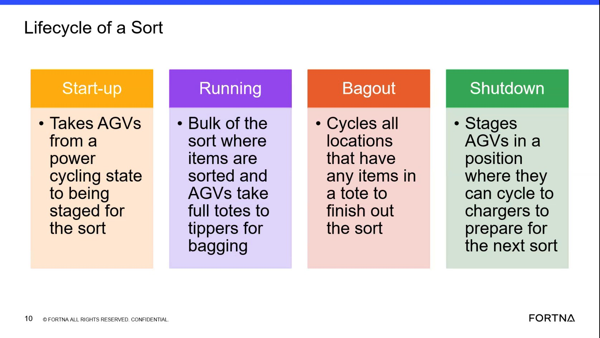

| Procedure ID | proc_check_rms_fleet_status_agvs_exchange_waiting_startup_delay_v1 |
|---|---|
| Title | Check RMS / fleet status UI for AGVs waiting to exchange during shutdown or startup delay waiting on charger |
| Procedure Type | diagnostic |
| Primary Role | L1_support |
| Support Safe | Yes |
| Capability Tags | agv_active_errors, fleet_system_status |
| Access Surface | rms_ui |
| Audience Roles | L1_support |
| Failure Pattern Tags | None |
| Validation Status | needs_sme_review |
| Merge Status | source_finalized |
Use the RMS / fleet status UI to determine whether AGVs are not progressing due to state-transition failure visibility patterns: (1) AGVs waiting to do an exchange during shutdown, and/or (2) startup delay while waiting for an AGV on the charger. The system is described as exposing this via system faults and visible waiting conditions.
Use when lifecycle progression appears delayed during shutdown/startup and you need to check whether RMS is showing AGVs in the documented waiting/fault visibility patterns (exchange-waiting during shutdown; charger-waiting startup delay).

Responsible role: L1_support
Instruction:
Open the RMS / fleet status UI (rms_ui) and navigate to the AGV status/errors overview area.
Expected result:
You are viewing the RMS AGV status/errors overview area where AGV waiting conditions and system fault/alert visibility can be checked.
Stop or Escalate If:
Responsible role: L1_support
Instruction:
In the RMS AGV status/errors overview, look for AGVs showing a waiting condition consistent with “waiting to do an exchange” during shutdown.
Expected result:
At least one AGV is indicated in RMS as waiting to do an exchange during shutdown (or you determine none are indicated).
Stop or Escalate If:
Responsible role: L1_support
Instruction:
In the RMS AGV status/errors overview, look for startup delay evidence consistent with “waiting … for an AGV on the charger.”
Expected result:
At least one AGV is indicated in RMS as contributing to startup delay by waiting for an AGV on the charger (or you determine none are indicated).
Stop or Escalate If:
Responsible role: L1_support
Instruction:
In the RMS AGV status/errors overview, confirm whether system faults/alerts are visible and align with the exchange-waiting and/or charger-waiting conditions you observed.
Expected result:
RMS shows visible system fault/alert entries that align with the waiting conditions (or you determine there are no aligning fault/alert entries).
Stop or Escalate If:
Responsible role: L1_support
Instruction:
If you see repeated or widespread waiting/fault indications that prevent lifecycle progression (e.g., multiple AGVs stuck in exchange-waiting or charger-waiting states), stop and escalate for deeper investigation.
Expected result:
Escalation is initiated when the RMS evidence shows repeated/widespread waiting/fault indications consistent with the described patterns.
Stop or Escalate If: